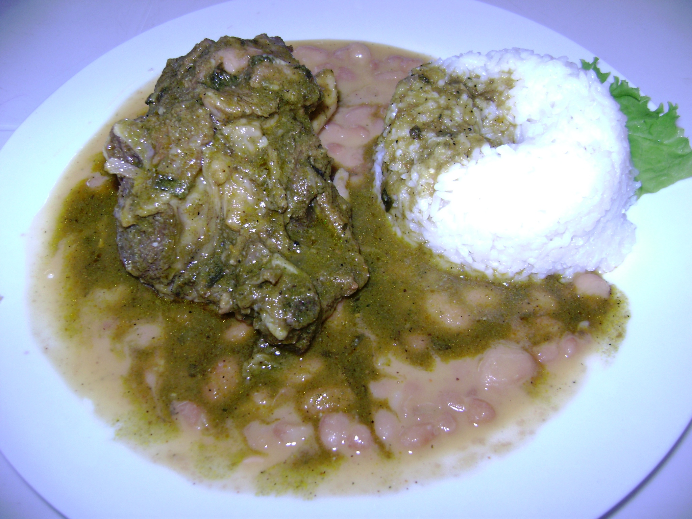

Peruvian Goat Stew
My dad and his family are from the north coast of Peru and a traditional dish from the region is Seco de Cabrito, which is a goat stew made with goat meat, cilantro, beans, Chicha de Jora, beans, and rice. It is commonly eaten for lunch with the family or can be served during special occasions. When we used to visit my grandmother that lives in the region, she would usually make this meal because she knows it is my favorite. She used to tell me I will prepare everything you like, especially that Seco de Cabrito.
I am a huge fan of stews and, in Peru, we have a big variety of stews, but as I mentioned, this is my favorite because every time I eat it, I get memories from my vacations at my grandmother's house and my aunt and cousins. Once we moved to the States, my dad prepares this recipe in a simpler way and with beef instead of goat meat, but I wanted to share the original recipe that brings back to me such good moments of my life.
If you plant on making this recipe, I would recommend the following:
- If you want a richer flavor, let the meat marinate overnight.
- For a better traditional flavor, you can use Chicha de Jora, which is a fermented drink made from jora corn. Use beer if this is unavailable.
- Make sure to cook the meat slowly for better tenderness
This is the recipe for the soup:
| Peruvian Goat Stew |
| Servings: 4 |
Total preparation tiem: 4 hours and 15 minutes |
| Ingredients:
For the marinade:
- 2 lbs of goat meat
- 1 tsp black pepper
- 1 tbsp ground cumin
- 1 tbsp vinegar or lemon juice
-
- 1/2 beer or Chicha de Jora
- 2 tbsp yellow chilli paste
- Salt to taste
For the stew:
- 2 tbsp vegetable oil
- 1 finely chopped red onion
- 4 minced gloves of garlic
- 1 large diced tomate
- 1 tbsp brown sugar
- 1 cup of cilantro blended with some water
- 1 cup Chicha de Jora or beer
- 1 cup beef or chicken broth
- Salt to taste
For serving:
- White cooked rice
- Canary beans
- Boiled cassava
|
Instructions:
- To marinate the goat meat, place it in a big bowl and add cumin, black pepper, salt, vinegar or lime juice, and yellow chilli paste.
- Pour in 1/2 cup of Chicha de Jora or beer and mix with the meat to coat evenly.
- Cover and refrigerate for at least 2 hours or overnight.
- Once the meat is marinate, heat 2 tbsp of vegetable oil in a large pot.
- Add the marinated meat and sear on all sides until golden brown.
- Once the meat is golden brown, remove it and set aside.
- Using the same pot, sautee the chopped onions and garlic until they release their smells.
- Stir in the diced tomato and sugar and cook for another 2 minutes.
- Add the blended cilantro mixture and cook until the sauce becomes fragrant.
- Then, return the meat to the pot and pour the remaining Chicha de Jora or beer plus the broth.
- Reduce the heat to low, cover, and simmer for about 2 hours. Make sure to ocassionally stir the stew.
- The meat is ready when it is fork-tender and the sauce has tickened.
- Serve stew with white rice, canary beans, and boiled cassava.
|